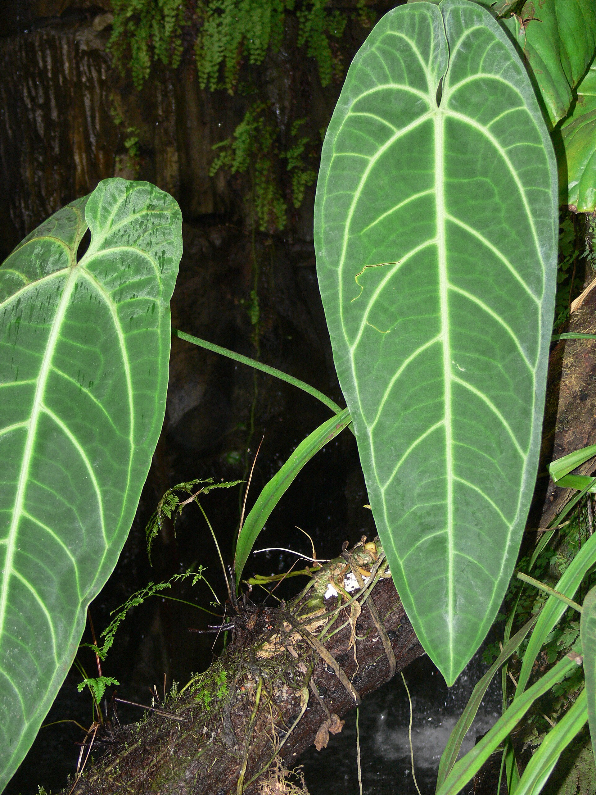
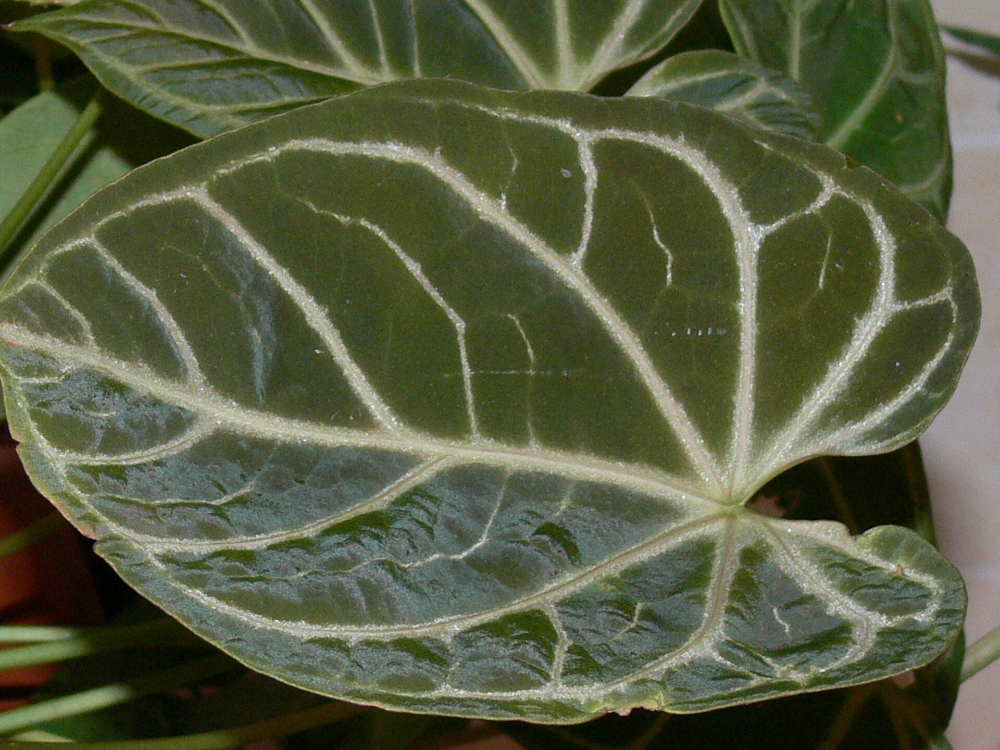

Anthurium
01A rainha dos antúrios
Disponibilidade sob consulta
Antúrios de coleção
Folhagens que despertam o olhar.
Uma nova forma de colecionar beleza.

Anthurium warocqueanum
A essência Paulo & Jana
O desenho de uma nervura. O toque visual do veludo. A surpresa de uma nova folha.
Nosso universo é feito de antúrios que convidam a desacelerar e observar.
Um olhar para o extraordinário
Formas únicas. Texturas surpreendentes.
Conheça o universo dos antúrios.
A rainha dos antúrios
Volume, textura e presença
O desenho da natureza
O rei dos antúrios
Uma presença extraordinária
Pequenos detalhes, grande beleza
Fotografias de referência das espécies. Consulte os exemplares, os valores e a disponibilidade de cada planta.

Um outro ritmo
Colecionar plantas é acompanhar o tempo. É descobrir novos tons, observar cada crescimento e abrir espaço para uma beleza que está sempre mudando.
O cuidado também faz parteCultivar é se aproximar
Cada espécie tem seu ritmo.
Cada ambiente, suas particularidades.
Conheça o formato, a textura e o porte da espécie. A planta ideal também precisa combinar com o seu espaço.
Antes de escolher, consulte fotos atuais, tamanho e estágio de desenvolvimento do exemplar.
Informe-se sobre as necessidades da espécie e observe como a planta responde ao ambiente ao longo do tempo.
Sua coleção começa com uma conversa
Consulte valores, disponibilidade e detalhes dos exemplares
com Paulo & Jana.
Fotografias de referência da espécie. Consulte fotos atuais do exemplar.
Paulo & Jana · Plantas
Anthurium
Valor sob consulta
Exemplar, valor e disponibilidade a confirmar.
Demonstração de compra · nenhum pagamento será cobrado.
Entrega e condições de envio a confirmar com Paulo & Jana.
O tamanho, o desenho e a coloração variam entre exemplares.
Continue descobrindo